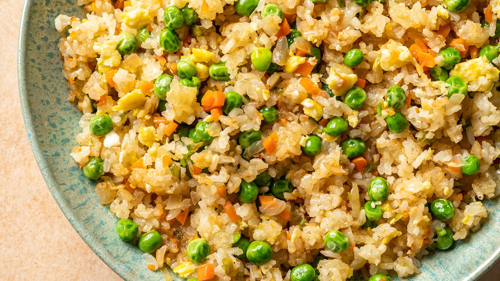

Homemade Fried Rice ingredients:

- Cooked rice: Any kind of white or brown rice will do.
Just be sure that it is cooked
- Eggs:Which add great flavor, texture and protein.
- Carrots, onions, green onions and peas:
These are veggies that I used
- Garlic:Minced
- Soy Sauce:Great flavor
- Oyster sauce:Great flavor too
- Toasted Sesame Oil:Finishing touch
- Butter:Add creaminess